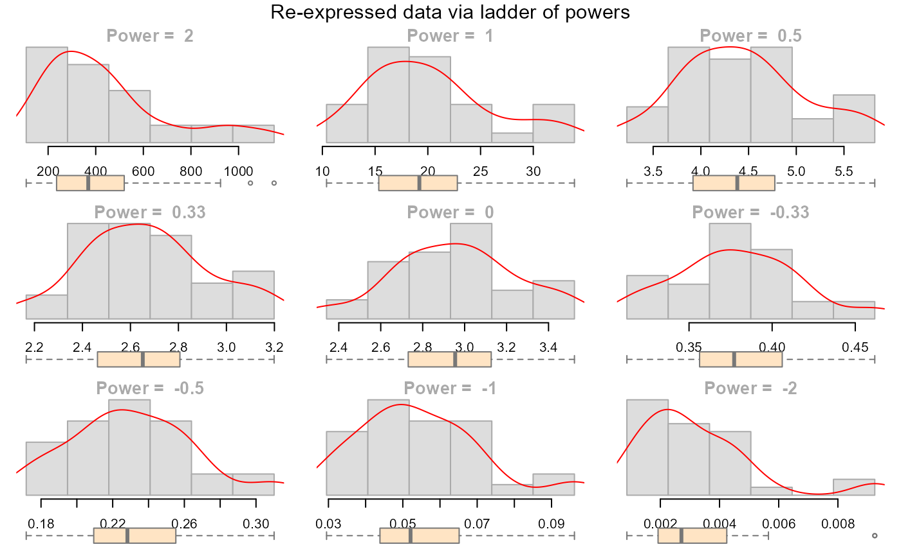

eda_unipow re-expresses a vector on the ladder of powers
and plots the results using a histogram and a density function. Either the
Tukey or Box-Cox transformation is used in computing the re-expressed
values.
Usage
eda_unipow(
x,
p = c(2, 1, 1/2, 0.33, 0, -0.33, -1/2, -1, -2),
tukey = FALSE,
bins = 5,
cex.main = 1.3,
col = "#DDDDDD",
border = "#AAAAAA",
title = "Re-expressed data via ladder of powers",
...
)Arguments
- x
Vector
- p
Vector of powers
- tukey
If TRUE, apply Tukey's power transformation. If FALSE adopt Box-Cox transformation
- bins
Number of histogram bins
- cex.main
Histogram title size (assigned to each histogram plot)
- col
Histogram fill color
- border
Histogram border color
- title
Overall plot title (set to NULL for no title)
- ...
Other parameters passed to the graphics::hist function.
Details
The output is a lattice of descriptive plots showing the transformed data
across different powers.
Examples
data(mtcars)
eda_unipow(mtcars$mpg, bins=6, tukey = TRUE)
